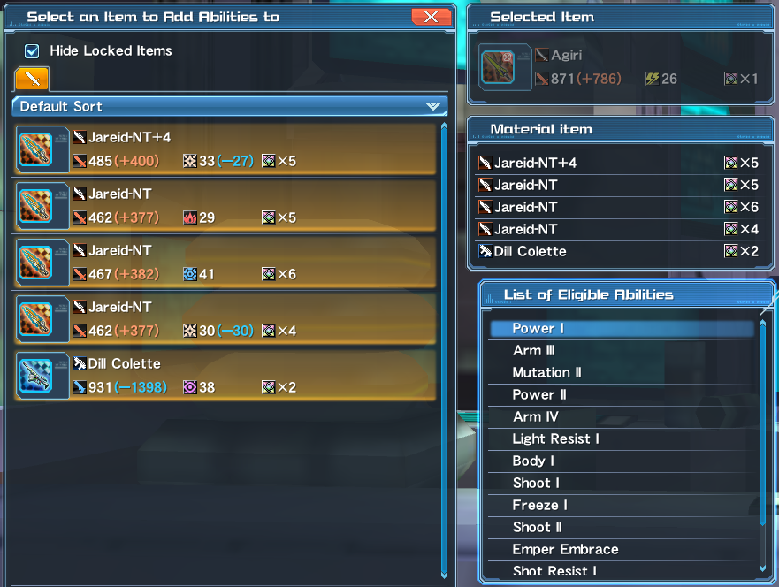
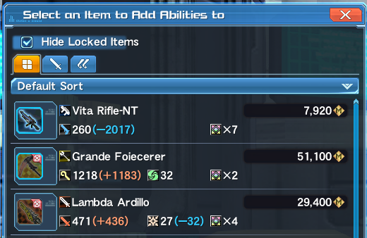

Ever wondered what those weird bits attached to that unit or weapon you just picked up that seemingly add some stats to the equipment are? Those are called Special Abilities or Affixes, as what most players call them.
Affixing is a player term used for adding and modifying affixes on their weapons and units. This process is done via the Item Lab located at the Shopping Area. The NPCs you are to look for are Dudu or Monica.
Monica is the ‘bring your daughter to work’ but she was forgotten and now is the horrible affix person.
Affixing generally boosts the player’s performance by increasing raw stats or giving additional effects in combat. Outside of personal usage, affixing can also be a good source of income for players apart from doing Client Orders or selling Items from AC Scratch, Item Codes, or rare drops.
When affixing, you can have up to a maximum of six pieces of equipment to work with in a single process. These would be the so-called Base and Fodders.
The base is the piece of equipment you will be upgrading, while the fodders are the pieces of equipment you will be consuming.
Nothing in the world is free (sobs) but we sure can make it cost less.
Affixing Costs refer to the process fee when affixes are placed on equipments. The cost increases with the number of fodders used and it varies depending on the said equipment. Generally the higher the rarity of the equipment, the more expensive the process becomes so it has become common practice to use the cheapest equipment as Fodders.
